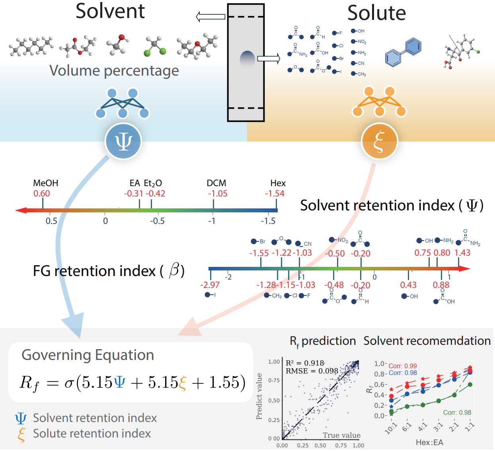
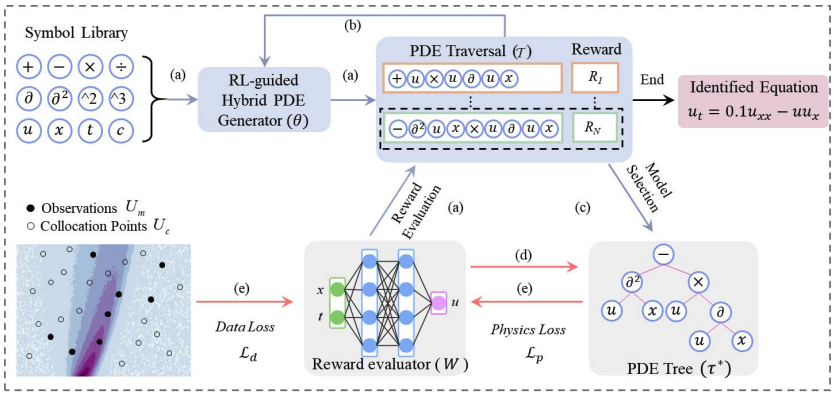
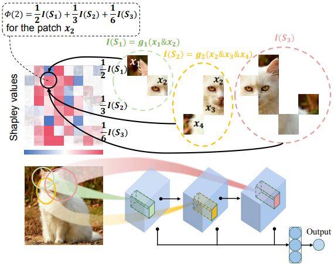
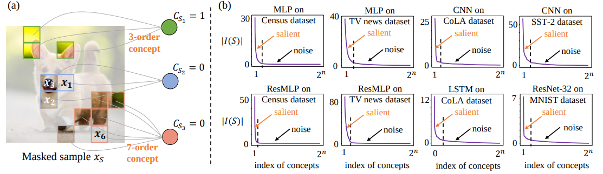
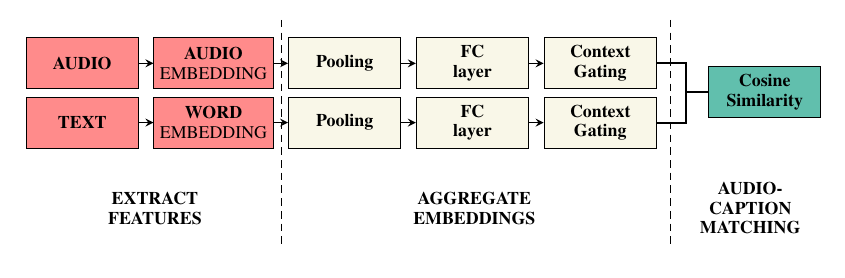
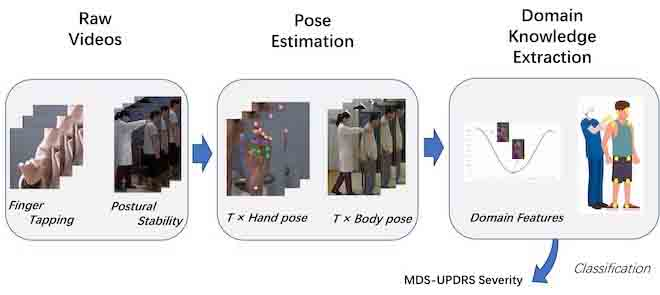
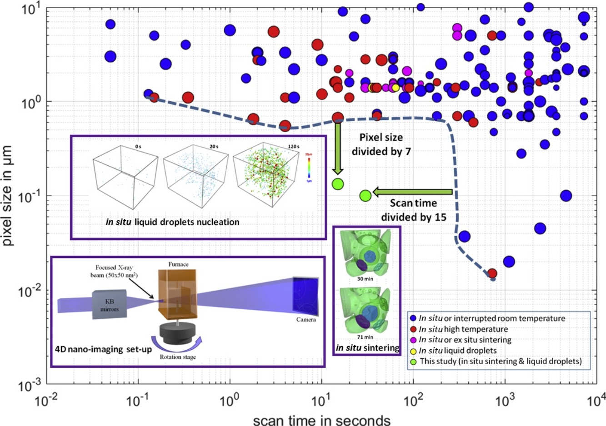
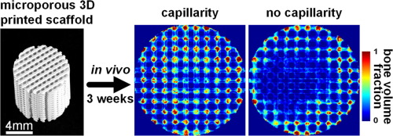

Publications
Here, * denotes equal contribution.


Defining and extracting generalizable interaction primitives from DNNs
Lu Chen*,Siyu Lou* , Benhao Huang, and Quanshi Zhang
In International Conference on Learning Representations, 2024
Paper
Lu Chen*,
In International Conference on Learning Representations, 2024
Paper

Physics-constrained robust learning of open-form partial differential equations from limited and noisy data
Mengge Du, Yuntian Chen, Longfeng Nie,Siyu Lou , Dongxiao Zhang
Physics of Fluids, 2024
Paper
Mengge Du, Yuntian Chen, Longfeng Nie,
Physics of Fluids, 2024
Paper




Automatic Detection Pipeline for Accessing the Motor Severity of Parkinson’s Disease in Finger Tapping and Postural Stability
Ning Yang, De-Feng Liu, Tao Liu, Tianyuan Han, Pingyue Zhang, Xuenan Xu,Siyu Lou , Huan-Guang Liu, An-Chao Yang, Cheng Dong, and others
IEEE Access, 2022
Paper
Ning Yang, De-Feng Liu, Tao Liu, Tianyuan Han, Pingyue Zhang, Xuenan Xu,
IEEE Access, 2022
Paper

Fast in situ 3D nanoimaging: a new tool for dynamic characterization in materials science
Julie Villanova, Rémi Daudin, Pierre Lhuissier, David Jauffres,Siyu Lou , Christophe L Martin, Sylvain Labouré, Rémi Tucoulou, Gema Martı́nez-Criado, and Luc Salvo
Materials Today, 2017
Paper
Julie Villanova, Rémi Daudin, Pierre Lhuissier, David Jauffres,
Materials Today, 2017
Paper

Micropore-induced capillarity enhances bone distribution in vivo in biphasic calcium phosphate scaffolds
Laurence E Rustom, Thomas Boudou,Siyu Lou , Isabelle Pignot-Paintrand, Brett W Nemke, Yan Lu, Mark D Markel, Catherine Picart, and Amy J Wagoner Johnson
Acta biomaterialia, 2016
Paper
Laurence E Rustom, Thomas Boudou,
Acta biomaterialia, 2016
Paper